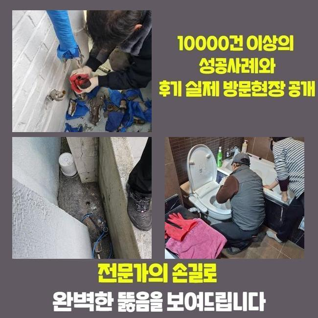
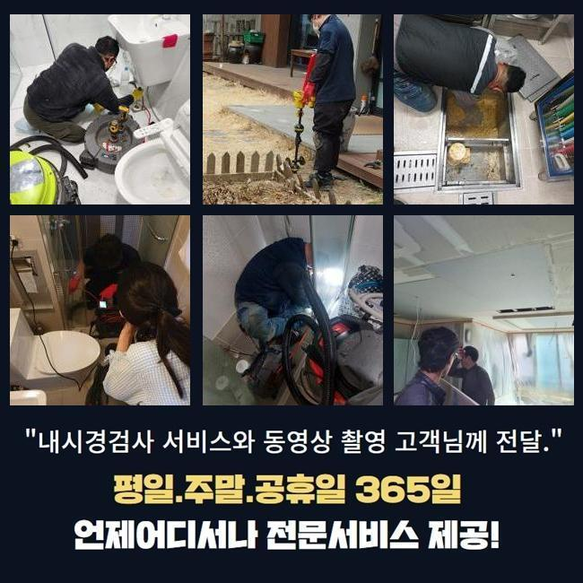
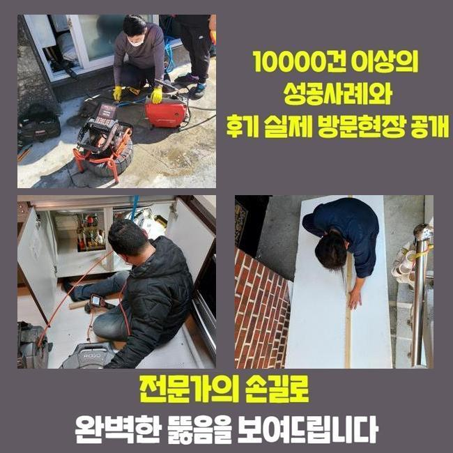
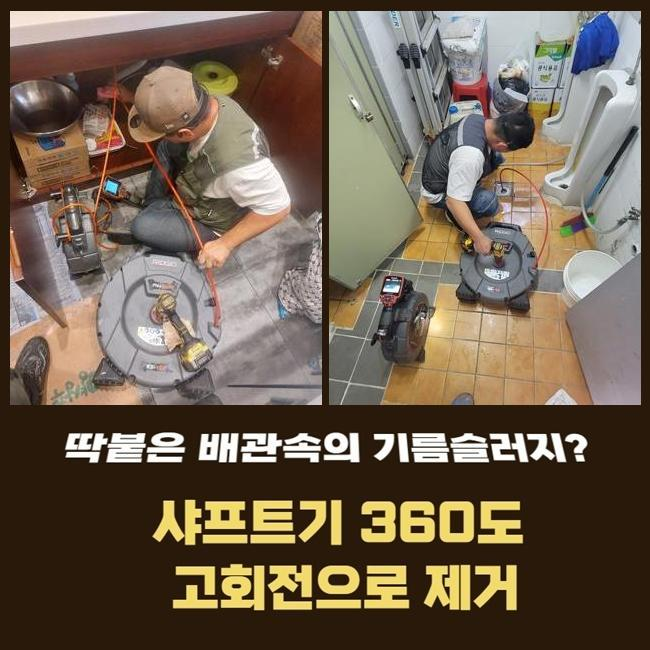
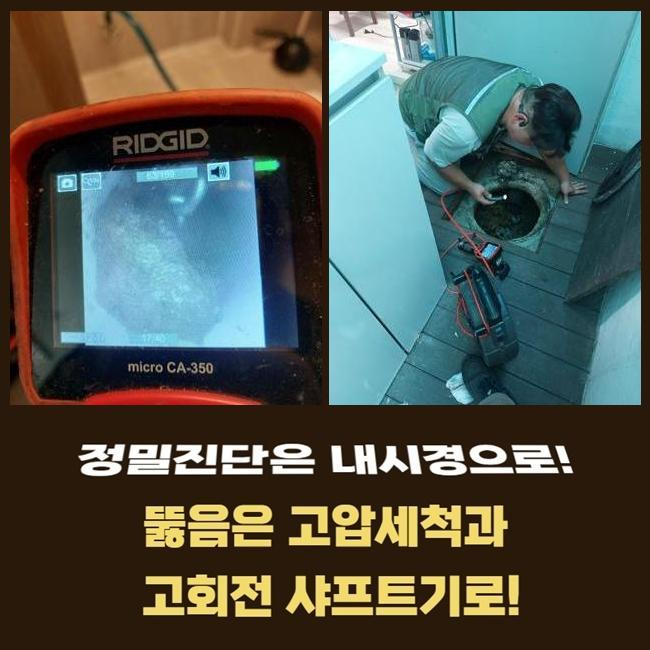
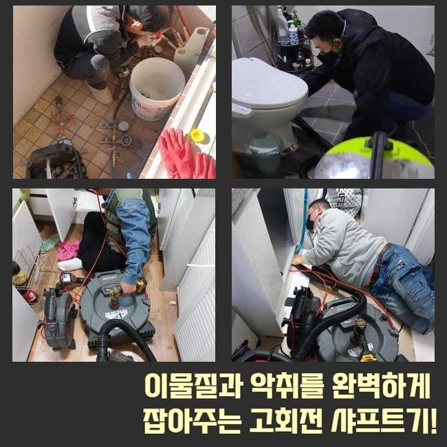
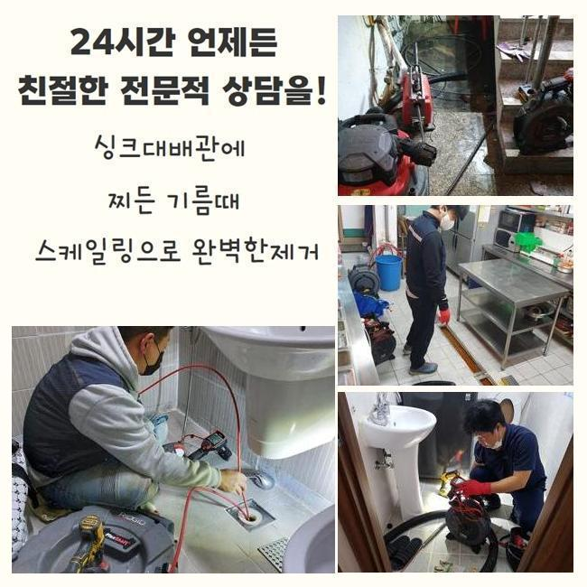

🏠 양주 광사동싱크대배수관막힘 은현면 맨홀역류 설비하는곳
양주 싱크대막힘 전문 시공 후기

📋 작업 개요
- 위치: 양주
- 서비스 유형: 싱크대막힘, 하수구막힘, 배관막힘, 맨홀막힘, 역류해결, 배관청소, 고압세척
- 작업 일시: 2025. 2. 18. 16:08
- 업체명: 하수구수사대 (010-5615-2118)
🔍 문제 상황
양주 광사동싱크대배수관막힘 은현면 맨홀역류 설비하는곳
저희들은 일주일 전 상가건축물의 통수장애를 해결할 목적으로 달려가보았습니다
상담을 진행했던 고객의 안내로 저희업체는 상가내의 화장실부분에서 골치아픈 이물질 역류 통수오류를 해결하고자 도착했죠
고객의 경우 이것때문에 여러가지의 민원까지 수용해야했던 상황이였어요
해당 증상을 안정적으로 조치해줘야했기에 저희들은 도착하고서 이곳저곳을 진단했습니다
꾸준히 쌓이는 슬러지가 관로를 좁혀버린걸 체크하고 신속하게 해결했어요
이전의 현장들로 판단하건대 이런 오염물들은 8할 이상이 공동배수관에서 목격되므로 이같은 증세가 생겨난 걸로 예상했어요
그렇기에 빠르게 외부쪽으로 자리를 옮겨 증상을 발현하는 관로들의 부위를 특정시키기위하여 진단과정을 이어갔어요
탐지장비를 이용하여 배관의 지점을 찾아주었고 개폐구를 여니 오염상태는 만만치 않았어요
수전 등에 쌓이게된 오염물의 잔여물질과 외부쪽에서 흘러들어간 폐기물들까지 뒤섞인 모습이였어요

🔎 원인 분석
💡 전문가 진단: 정밀 진단 장비를 사용하여 슬러지의 고착 여부를 판명하고 타격/세척 작업을 실시했습니다.
이러한 배수정체를 해결할 목적으로 즉각 알맞는 대응책을 펼쳤고 상업시설의 시설을 지속적으로 쓸 수 있게 하였습니다
배수구에 흡착물들이 축적되면 많은 통수오류를 유발하므로 해결들을 지체시키지않는것이 요구됩니다
점검해보니 잔해가 넓은 범위에 자리잡은걸 확인했는데요
이물들은 오랫동안 누적되면서 돌덩이처럼 딱딱해져 있었죠
고착화가 진행되면서부터 배수에 치명상이 나타났다고 생각하게되었습니다
그렇기에, 장치 사용을 해서 관로를 탈바꿈시켜보고자 했는데요
장치 사용을 해서 배수관을 시공하는 시점에는 고압수청소가 중요하겠습니다
예를들어 맨홀쪽에 이물들이 자리하고 있으면 평상시의 방법들로는 무리일 수 있죠
그리하여, 고압수청소로 효율적으로 내부오염원들을 없애주는것이 중요하겠습니다
컨디션을 회복시키면 배수관을 청결하게 유지하게되고 오류가 쌓이는 것을 사전에 막아낼 수 있어요
이 부분은 염두에 두고, 관로를 청소하고자하면 고압 세척과정을 고려하는것 또한 추천드려요

🔧 작업 과정
같은 맥락으로 잔해가 안쌓이게 때에 맞춰 청소해주는게 중요하고 적절히 조치해주면 원활하게 막힘들을 해결할 수 있습니다
그리하여 트러블들이 발생했을 때는 괄목할만한 대응이 중요하고 전문진의 손길로 속 시원한 통수과정을 유지시키는게 이행되어야해요
기술적인 부분도 요구되지만 전문적인 솔루션을 통해 배관을 깨끗히 유지시키는게 실질적인 방책이 될 수 있겠습니다
청소수행을 오차없이 이행하려면 구조적인 부분과 특성들을 알고 있어야 하죠
하수도의 경우 수많은 재질들로 이뤄져있고 기간이 지나면서 내식성이 저하되므로 무리를 이용하는건 위험할 수 있습니다
내구성과 위험요소들을 인지하고 올바른 압력들을 삽입해주어야 합니다
이같은 조건들을 준수한다면 고압세척들로 원하는 결과들을 얻게됩니다
이용했던 석션장치는 압차를 투입시켜 배수관의 잔재들을 실용적으로 제거했습니다
석션장치에 빠져나온 오염물의 잔재들을 목격했고 내시경기기를 이용해 구석구석 확인했더니 아직 이물들이 대다수라 배관공간을 협소하게 했죠
이 부분은 염두에 두고 고압수청소를 통해 저희의경우 해당 장소에서 발생한 막힘들을 조속하고 실용적으로 해결하고 매립된 형상과 고착정도를 파악해보고 청소하여 수월한 배수상황을 확보했습니다
이러한 증세는 상당수 흡착물들이 내측에 축적되어 누적되는 증상들로 통로가 좁아져 유수흐름들이 멈추는 현상들이 야기되게됩니다
이럴땐 전문인들의 손길로 내시경을 사용해 구석구석 검수하고 문제들을 유발하는 원인들을 싹쓸이하는게 중요한데요
고압수청소를 진행하며 저희업체는 타겟이되는 부위로 케이블을 이용했고 1m 위치에서는 기름들이 쏟아지며 배출되는 현상을 관찰했죠
이와 달리 기름뭉치가 위치해있는 3미터 포인트에선 내구성의 상황들을 확인해주고 분사의 압력을 주시하며 세척들을 진행시켰죠
내구성의 흡착이 심각하여 온수 고압수청소를 실시하였는데 안정성을 목표로하는 조건들을 상기시키며 기름뭉치들을 처리했죠
배수정체의 경우 예기치못하게 야기되어 수많은 고충을 야기시키죠
배관 장애는 대다수 이물들이 까닭으로 변모해 발발하기 때문에 골든타임 내에 통수오류를 정정해주어야 하겠습니다


✅ 작업 완료
고객의 불편해소를 위하여 빠르게 해결하겠습니다
통수오류를 조사하고 계획들을 선별해서 이물제거에 심혈을 기울이죠
신속한 해결책이 우선이기에 장기간 내버려두는 일은 없어야해요
해결책들이 필요하실 때에는 편히 문의하시면 되겠습니다
결함들이 발생하면 조속하게 대응하여 안전성을 갖추고 깔끔한 통수과정을 유지시키겠습니다




⚠️ 주방 싱크대 배관 막힘 예방 수칙
- ✅ 기름기가 묻은 식기나 프라이팬은 설거지 전 키친타올로 반드시 기름때를 닦아내세요.
- ✅ 주기적으로 싱크대 개수대에 뜨거운 물을 가득 받아 한 번에 내려 배관 내부 기름을 씻어내세요.
- ✅ 배수구 거름망을 미세한 필터로 사용하시고 음식물 찌꺼기가 틈으로 새어 들지 않게 관리하세요.
- ✅ 베이킹소다와 식초를 뜨거운 물과 함께 일주일에 한 번씩 부어주면 배관 살균과 막힘 예방에 좋습니다.
💡 핵심 정리
- 확실한 장비 작업(내시경 점검 및 샤프트 스케일링)으로 원인을 뿌리 뽑습니다.
- 작업 후 1년 이내에 동일한 부위 재발 시 100% 무상 A/S 서비스를 보장합니다.
- 서울 · 경기 · 인천 전 지역에 24시간 언제든 긴급 출동할 수 있도록 항시 대기 중입니다.
❓ 자주 묻는 질문 (FAQ)
🚨 양주 싱크대막힘 문제로 고민이신가요?
정확한 원인 진단과 확실한 시공으로 재발 없는 해결을 약속드립니다.
24시간 긴급 출동 | 서울 · 경기 · 인천 전지역 | 1년 내 재발 시 무상 A/S